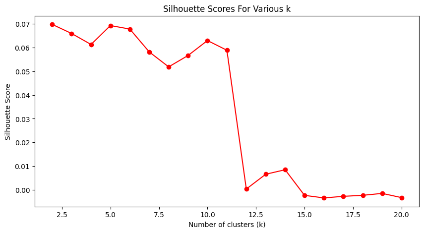

Spotify song recommendation algorithms
In this post, I explore my approaches to building a song recommendation system using Spotify data. I use multiple approaches and compare the results
Simple approach
Firstly, I used a dataset, containing song metadata that can be found here. For each song you are given - next to the obvious, such as artist, year, etc. - data that spotify creates. Examples of it being:
- Acousticness
- Danceability
- Energy
- Instrumentalness
- Liveness
- Loudness
- Speechiness
- Tempo
This data was then used to create values between 0 and 1, accoring to which percentaile of the data the songs fell. With that, I got the following results:
| Feature | Value |
|---|---|
| popularity | 0.819149 |
| duration | 125.667 |
| explicit | 0 |
| danceability | 0.335015 |
| energy | 0.179 |
| key | 0.454545 |
| loudness | 0.736815 |
| mode | 1.0 |
| speechiness | 0.033574 |
| acousticness | 0.88253 |
| instrumentalness | 0.0 |
| liveness | 0.0886 |
| valence | 0.315 |
| tempo | 0.391788 |
| time_signature | 0.8 |
| musical_era | 0.3 |
| track_id | 3BQHpFgAp4l80e1XslIjNI |
| track_name | Yesterday - Remastered 2009 |
| artist_name | ['The Beatles'] |
However, this quickly showed to be bad, as using either euclidean distance or cosine similarity to compare songs showed to be absolutely useless:
Similarity of songs to Yesterday - Remastered 2009 (The Beatles)
| Track title | Euclidean distance | Cosine similarity |
|---|---|---|
| Hey Jude | 305.668 | 0.9999237 |
| Hypnotize | 104.173 | 0.9999492 |
It is quite obvious that this is horrible. So I go to the second method.
Neural network approach - Word embeddings using Skip-gram
The next idea I had was to use a neural network to create word embeddings of the songs.
Spotify created a dataset that contains 1 million playlists. This sounded like a perfect example, giving me the necessary data for a recommendation system. In this unsupervised task, the idea is to try and find some way of embedding the songs such that the songs that are similar are close to each other in the embedding space. At the same time, two songs being on many playlists together sounded like a good way to measure similarity.
Each song is treated as a token, a word in a sentence. The playlists are then treated as sentences. The idea is to train a neural network to predict the context of a word, given the word itself. This is called the Skip-gram model. The real goal of this method is not only to find the song embeddings (something that I was quite sure could be found) but also to find some underlying structure in the data. This is because the songs are not only similar in the sense of their audio features, but also in the sense of the playlists they are in.
An idea of that is to ask a question like What song is the least like Yesterday by The Beatles or What song is like XXXX by YYYY if I take away ZZZZ by AAAA . This is something that is not possible with the first method.
Another thing that was of interest to me was to be able to then find some vectors that would represent certain concepts. The famous example of this is A king and a man differ by the same vector as a Queen and woman.
Results:
The first type of analysis I wished to preform was a very simple clustering of the songs. I used the K-means algorithm to cluster the songs. Finding the optimal k was done using a combination of the elbow method and the silhouette score. The results were quite good, as can be seen in the image bellow.
I chose the number of clusters to be 11, as the elbow method did not give a good, definitive answer but seemed to agree and the silhouette score rapidly decreased after that. With that, I then used TSNE to visualize the clusters both in 2D and 3D. The following images show the results (mind you, the 5% most extreme songs were removed, as they were outliers and made the visualization worse (more distant)).

It is notable to mention that this is clearly not the best. First and foremost, most of these songs are in English, which is already odd but okay, that I can chop up to some other reason. But in general, looking at these visualizations, it is clear that the clusters are not very good. The clusters flow into eachother, which makes sense.
Another thing I then did was to find the most similar songs to a given song. I used the cosine similarity to do this. The results were good and nicely specific. Fox example, taking a popular song by The Beatles, such Yesterday, the songs most similar to it were other Beatles songs.
- 1. Yesterday - Remastered - The Beatles,
- 2. With A Little Help From My Friends - Remastered - The Beatles,
- 3. All You Need Is Love - Remastered 2009 - The Beatles,
- 4. Vincent - Don McLean,
- 5. While My Guitar Gently Weeps - Remastered - The Beatles.
On the other hand, taking a less popular song by them with a more specific energy, such as It's Only Love resulted in the following:
- 1. Diet Mountain Dew - Lana Del Rey,
- 2. She Looks So Perfect - 5 Seconds of Summer,
- 3. Picture To Burn - Taylor Swift,
- 4. The Other Woman - Lana Del Rey,
- 5. Same Love - feat. Mary Lambert - Macklemore & Ryan Lewis.
I also created a small GUI to be able to look this up easier.
The final big question was if the directions inside of that space were able to be interpreted. As in the classic example of word embeddings, could it answer questions like more general than just similar. So first is, can it answer questions like What song is the least like Yesterday by The Beatles. And, drum roll please... the songs that are the least like Yesterday are:
- 1. Ooh Killem - King Kendrick,
- 2. Murder - Justin Timberlake - The 20/20 Experience,
- 3. Bounce - Iggy Azalea,
- 4. Cinema - Radio Edit - Benny Benassi,
- 5. Faith - Radio Edit - Blasterjaxx.
Sadly, I couldn't think of a way to test the last question but to be honest, that is something that I will have fun with some time when there will be more time for it
With that, I have also then created a simple playlist extention algorithm that averages out
weights of the songs and then just finds the songs that are the most similar to that average.
The playlists in italics are the seeds.
- Diet Mountain Dew by Lana Del Rey from the album Born To Die - The Paradise Edition
- Francis Forever by Mitski from the album Bury Me At Makeout Creek
- Lovers Rock by TV Girl from the album French Exit
- The Wild Life by Vacationer from the album Relief
- Beyond Love by Beach House from the album Depression Cherry
- My Girls by Animal Collective from the album Merriweather Post Pavilion
- Bel Air by Lana Del Rey from the album Born To Die - The Paradise Edition
- Passing Out Pieces by Mac Demarco from the album Salad Days
- Bloodflows by SOHN from the album Bloodflows
- She Said by Sundara Karma from the album Youth is Only Ever Fun in Retrospect
- Sleepyhead - Stripped Down Version by Passion Pit from the album Manners
- How Long Must I Wait by Dr. Dog from the album Be The Void
- Sympathy For The Devil by The Rolling Stones from the album Beggars Banquet
- Stairway To Heaven by Led Zeppelin from the album Led Zeppelin IV
- Sultans Of Swing by Dire Straits from the album Dire Straits
- Southern Man - Remastered by Neil Young from the album After The Gold Rush
- Kashmir by Led Zeppelin from the album Physical Graffiti
- Who Are You by The Who from the album Who Are You
- Bron-Y-Aur Stomp by Led Zeppelin from the album Led Zeppelin III
- Stay With Me by Faces from the album A Nod Is As Good As A Wink To A Blind Horse
- Stairway to Heaven by Swan Montgomery from the album Swan Montgomery Covers the Greatest Hits of Led Zeppelin
- Time by Pink Floyd from the album The Dark Side of the Moon
- The Real Slim Shady by Eminem from the album The Marshall Mathers LP
- Hypnotize - 2014 Remastered Version by The Notorious B.I.G. from the album Life After Death (Remastered Edition)
- Timber by Pitbull from the album Global Warming: Meltdown (Deluxe Version)
- Hits from the Bong by Cypress Hill from the album Black Sunday
- Ghetto Supastar (That is What You Are) by Pras from the album Ghetto Supastar
- Boyz by M.I.A. from the album Kala
- Freek-A-Leek by Petey Pablo from the album Still Writing In My Diary: 2nd Entry
- Paul Revere by Beastie Boys from the album Licensed To Ill
- Splash Waterfalls by Ludacris from the album Chicken - N - Beer
- The Night Out - Madeon Remix by Martin Solveig from the album Smash
- Real Nigga Roll Call by Lil Jon from the album Crunk Juice
- Throw Some D's by Rich Boy from the album Rich Boy
Attention is all you need - the use of transformers for song recommendation
While the previous method turned out to be quite a success (I already have some results ready but not enough to post here) it does not solve the original task I wanted to solve. The original task was to find a way to recommend songs to a user. And while there are many approaches to this, I wanted to try and use the transformer architecture.
The main reason was that I had not seen anyone doing this. The approach outlines in the previous chapter was also rather new but after a lot of digging, I was able to find a paper that was already dealing with that. But the transformer architecture was not used.
On top of that, there has been a lot of talk a bout transformers lately, being the backbone of GPT, Bard and other models. This gave me an idea that I wanted to try that as well.
¸This method did not work too well due to the simple time complexity of running the model. The model was comprised of 283 million parameters and took a long time to train. The results were not good enough, most likely due to the fact that the size of the model was not big enough.
This, coupled with the fact that to get even a slight plateau in the loss function, the model had to be trained for 10 hours and on top of that I also limited the data to only 20% of the dataset. So icreasing the complexity of the model, as well as adding data to it was not feasable on my small little computer so I had to stop.
I will revisit this in the future, as I think that this is a very interesting approach and I would like to see how it would work. But I will need access to a stronger GPU and more time to do this.
Examples of some playlists generated from the model
These are some examples. The songs in Italics are the songs that were used as the seed for the playlist.- Diet Mountain Dew by Lana Del Rey from the album Born To Die - The Paradise Edition
- Francis Forever by Mitski from the album Bury Me At Makeout Creek
- Lovers Rock by TV Girl from the album French Exit
- K-LOVE Fan Awards: Songs of the Year (2015 Mash-Up) by Anthem Lights from the album K-LOVE Fan Awards: Songs of the Year (2015 Mash-Up)
- Million Dollar Bills by Lorde from the album Pure Heroine
- The Real World by Drugdealer from the album The End Of Comedy
- All Creatures (Live) by Kings Kaleidoscope from the album Live in Focus - EP
- Reflection - From "Mulan"/Soundtrack Version by Lea Salonga from the album Mulan
- When Will My Life Begin - From "Tangled"/Soundtrack Version by Mandy Moore from the album Tangled
- A Whole New World by Lea Salonga from the album Aladdin
- I Just Can't Wait to Be King - From "The Lion King"/Soundtrack Version by Jason Weaver from the album The Lion King
- Poor Unfortunate Souls - From "The Little Mermaid" / Soundtrack Version by Pat Carroll from the album Little Mermaid
- I Just Can't Wait to Be King - From "The Lion King"/Soundtrack Version by Jason Weaver from the album The Lion King
- Sympathy For The Devil by The Rolling Stones from the album Beggars Banquet
- Stairway To Heaven by Led Zeppelin from the album Led Zeppelin IV
- Sultans Of Swing by Dire Straits from the album Dire Straits
- Only the Good Die Young by Billy Joel from the album The Stranger (30th Anniversary Legacy Edition)
- Aerials by System Of A Down from the album Toxicity
- Eye Of The Beholder by Metallica from the album ...And Justice For All
- Get Closer by Seals and Crofts from the album Get Closer
- Listen To The Music by The Doobie Brothers from the album Toulouse Street
- I'm Free by The Who from the album Tommy
- Heat Of The Moment by Asia from the album Asia
- Right Here Waiting by Richard Marx from the album Repeat Offender
- Paradise City by Guns N' Roses from the album Appetite For Destruction
- Hot For Teacher - 2015 Remastered Version by Van Halen from the album 1984
- Sympathy For The Devil by The Rolling Stones from the album Beggars Banquet
- Stairway To Heaven by Led Zeppelin from the album Led Zeppelin IV
- Sultans Of Swing by Dire Straits from the album Dire Straits
- Only the Good Die Young by Billy Joel from the album The Stranger (30th Anniversary Legacy Edition)
- Aerials by System Of A Down from the album Toxicity
- Eye Of The Beholder by Metallica from the album ...And Justice For All
- Get Closer by Seals and Crofts from the album Get Closer
- Listen To The Music by The Doobie Brothers from the album Toulouse Street
- I'm Free by The Who from the album Tommy
- Heat Of The Moment by Asia from the album Asia
- Right Here Waiting by Richard Marx from the album Repeat Offender
- Paradise City by Guns N' Roses from the album Appetite For Destruction
- Hot For Teacher - 2015 Remastered Version by Van Halen from the album 1984
I think these are rather weak, but who am I to judge. So I went back to the previous option of embedding it and instead of some complicated model, I used a simple average of the embeddings of the songs in the playlist.
I will also add to this Blog later, adding two things: Firstly, diagrams to how it works and secondly results that will be improved over time.